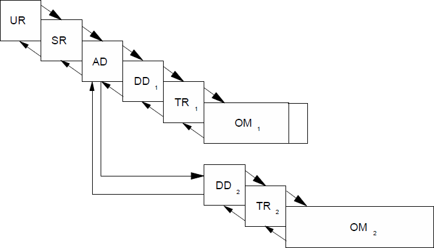
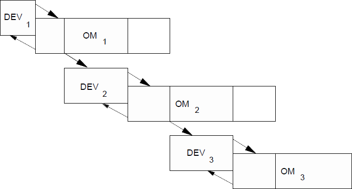
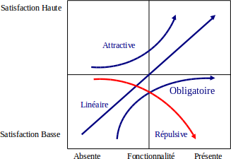

Définitions :
Un projet est un ensemble de tâches ou d'actions effectuées par une ou plusieurs personnes pour satisfaire un besoin d'un mandant.
Les cinq conditions suivantes sont nécessaires pour parler de projet :
-
Le mandant (le client interne ou externe, le demandeur) doit exister et être clairement identifié.
-
Un chef de projet doit être nommé.
-
Le but est connu et formalisé.
-
Le délai est connu et formalisé.
-
le budget est connu et formalisé.
Dans l'approche "en chute d'eau", les phases sont exécutées l'une après l'autre dans l'ordre.
Dans l'approche "incrémentale", les phases DD, TR et OM sont démultipliées.
L'approche "itérative" :
-
pas être classée comme approche classique.
-
méthodes dites "modernes".
-
composée en de multiples cycles de développement "en chute d'eau" avec un recouvrement entre les phases TR et OM.
Le chemin critique est la succession des tâches se suivant l'une l'autre sans marge du début à la fin d'un projet.
Tout retard sur une seule des tâches située sur le chemin critique compromet le délai final d'un projet.
Une table RACI est utilisée pour spécifier les responsabilités des intervenants.
-
Responsible : celui qui fait la/les action(s).
-
Accountable : celui qui valide, qui approuve, quia la responsabilité.
-
Consulted : celui qui est consulté.
-
Informed : celui qui est informé.
Le Manifeste Agile formalise en 2001 la notion de la méthode "Agile" et met en évidence des valeurs et des principes.
Les valeurs sont :
-
"personnes et interaction plutôt que processus et outils" : l'équipe.
-
"logiciel fonctionnel plutôt que négociation de contrat" : collaboration.
-
"réagir au changement plutôt que suivre un plan" : acceptation du changement.
→ L'équipe collabore et accepte le changement pour une application qui fonctionne.
Les principes sont :
-
L'application des principes Agile conduit à une méthode de développement de logiciel qui est itérative, incrémentale et donne au client une application fonctionnelle, testée et documentée à la fin de chaque itération.
Une équipe Agile travaille ensemble à la réussite du projet. Différents rôles doivent être identifiées : le responsable produit, le client, les développeurs et le chef de projet.
-
travalle comme une équipe.
-
travaille en itérations courtes.
-
délivre quelque chose à la fin de chaque itération (en principe au client).
-
se focalise sur les priorités "business" (en principe, les priorités du clients et non celles du développeur).
-
mesure et s'adapte.
Un projet Agile se divise en une ou plusieurs Releases, divisées en plusieurs itérations de durée limitée et constante (minimum cinq itérations de préférencce). À la fin d'une Release, le logiciel est complet, autonom, testé, documenté et utilisable. Il est envoyé au client.
Une "user story" est une brève description d'une fonctionnalité, vue par un utilisateur ou un client sous la forme :
-
→ En tant que <type d'utilisateur>n je souhaite/dois <fonctionnalité> afin de <objectif ou valeur business>.
Exemple : En tant que professeur, je sohaite retrouver mon local via mon nom, le nom du cours et la date, afin de retrouver rapidement le local où je dois donner cours.
Les user stories doivent vérifier les critères suivants :
-
non ambigüe
-
concise
-
indépendante
-
négociable
-
valorisable
-
estimable
-
de la bonne taille
-
cohérente
-
vérifiable
TRUC :
INVEST : Independent, Negotiable, Valuable, Estimatable, Sized appropriately, Testable
Toutes les spécifications ou pour être plus précis, toutes les exigences, quelles soient fonctionnelles, non-fonctionnelles, conceptuelles ou des contraintes, devraient être formalisées sous la forme de user stories.
Diviser une histoire :
On divise une histoire :
-
pour séparer des cas différents.
-
parce qu'elle est trop grande pour être implémentée en une seule itération.
-
pour isoler des fonctionnalités communes ("cross-cutting concerns").
-
pour séparer spécifications fonctionnelles et non-fonctionnelles, en particulier les spécifications de performances.
-
pour séparer des fonctionnalités de différentes priorités.
Évaluer la taille :
Une équipe Agile fait la différence entre les estimations de "taille" et les estimations de durée : la "taille" est une mesure relative de la complexité d'une histoire alors que la durée est une mesure absolue qui dépend de nombreux facteurs.
Le temps et la distance sont bien deux concepts distincts.
Pour être agile, il faut donc introduire donc la gestion de nos projets des concepts analogues à la distance et à la vitesse.
| Voyage | Projet |
|---|---|
| Distance | Taille |
| Temps | Temps |
| Vitesse | Vitesse ou Vélocité |
La taille d'un projet est, par définition, la somme des tailles des histoires définissant le projet.
m.d = men days = jours hommes → réservé à la mesure de ce que le projet consume (ou consumera) et non pas à la mesure de taille.
Un "jour-idéal" est par définition un jour où tout se passe bien, un jour où l'équipe travaille à l'histoire choisie du début à la fin de la journée, sans interruption ni perturbations, et où tout ce qui est nécessaire est prêt "sous la main".
L'utilisation de jour-idéaux pour mesurer la taille évite certains inconvénients de la mesure en jours-hommes mais la confusion entre les jours (normaux) et les jours-idéaux reste possible.
Un point est une mesure arbitraire et relative de la taille d'une histoire.
De plus, pour obtenir des ratios ayant un sens et n'étant pas trop influencés par des événements ponctuels, pour ne pas non plus de temps à mesurer et calculer qu'à produire, l'équipe Agile mesure le temps par "itération" et non par jour.
Nous cherchons une mesure arbitraire, relative et consensuelle qui est proportielle au temps nécessaire à l'équipe.
Pour estimer la taille d'une histoire, quatre méthodes sont fréquemment utilisées : l'expérience, l'analogie, la désagrégation et le "planning poker". Afin d'éviter des discussions sans fin, une équipe Agile choisira une échelle de mesure discrète, babsée sur la site de Fibonacci : 0, 1, 2, 3, 5, 8, 13, ...
Dans certains cas, il est nécessaire de rééaluer la taille d'une histoire.
L'équipe réévaluera la taille lorsque :
-
une histoire est changée (mais il n'estpas permis de changer une histoire pendant l'itération qui la concerne).
Il est interdit de réévaluer lorsque :
-
une histoire est plus rapide ou plus longue que prévu (c'est la vitesse qui change).
-
une histoire est plus facile ou difficile que prévu (c'est la vitesse qui change).
-
une histoire n'est pas terminée à la fin d'une itération.
Le modèle Kano :
Le professeur Kano classe la préférence, la satisfaction du client (par rapport à une fonctionnalité, une exigence, une histoire, ...) en cinq catégories : obligatoire (must-have), linéaire (linear), attractive (exciters delighters), répulsive (reverse) et indifférente (indifferent).
Toutes les exigences obligatoires divent dont être implémentées. Il faut implémenter autant que possible d'exigences linéaires. Éviter les exigences répulsives et essayer d'implémenter quelques exigences attractives mais se rappeler que leur absence ne crée pas vraiment d'insatisfaction chez le client.